資料科學第四週-資料前處理
資料前處理是為了準備資料給分析使用，步驟包括資料觀察、篩選、填補缺失值、轉換等。透過Pandas工具觀察資料，瞭解基本資訊和敘述統計。補缺失值方法包括以欄位平均或列平均填值，刪除不需要的欄位或有缺失值的資料。最後，將文字轉換成二進制編碼備用。
資料前處理
所謂「前處理」是指在進行資料分析之前，先對資料進行一些處理，以便讓資料更適合進行分析。前處理的內容很多，包括「資料觀察」、「資料篩選」、「填補遺失值」、「資料轉換」與「刪除重複資料」等。
資料篩選在前面建立DataFrames時操作過一些條件篩選方式，除此之外，以下我們一一介紹。
資料觀察
可以透過Pandas中的info() describe() 和duplicated()，減少人為觀察時，粗心所造成的遺漏。
我們以某班的學期成績為例子來進行資料的觀察並作後續的動作。
在載入dataframe時，我們可以使用head()列出頭幾筆資料即可。
預設為前5筆資料(可填入參數，得到多筆資料列)
載入雲端硬碟與資料
1 | |
1 | |
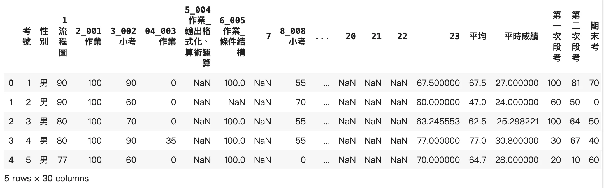
閱讀基礎資訊 info()
在真實資料中大多不是完美的。所謂GIGO，如果在前面不先把資料處理好，分析出來的也會是垃圾喔！
會先對資料查看他的基本資訊。
1 | |
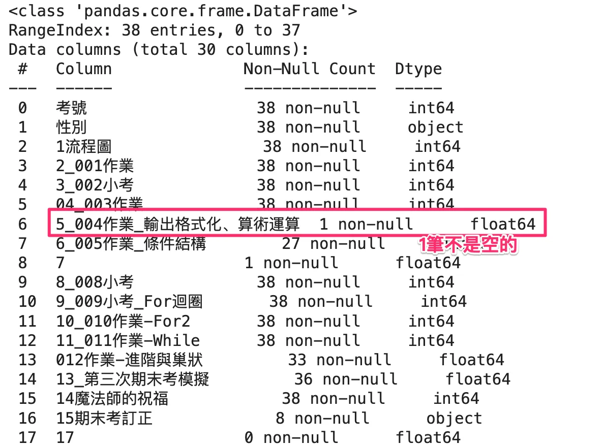
可以看到「5 5_004作業_輸出格式化、算術運算 1 non-null float64」
這筆資料幾乎是空的，我們先不急著做刪除
查看關於數字的敘述 describe()
先看看describe會有什麼作用吧，可以看到：
資料筆數(count)
平均值(mean)
標準差(std)
最小值(min)
最大值(max)
1 | |
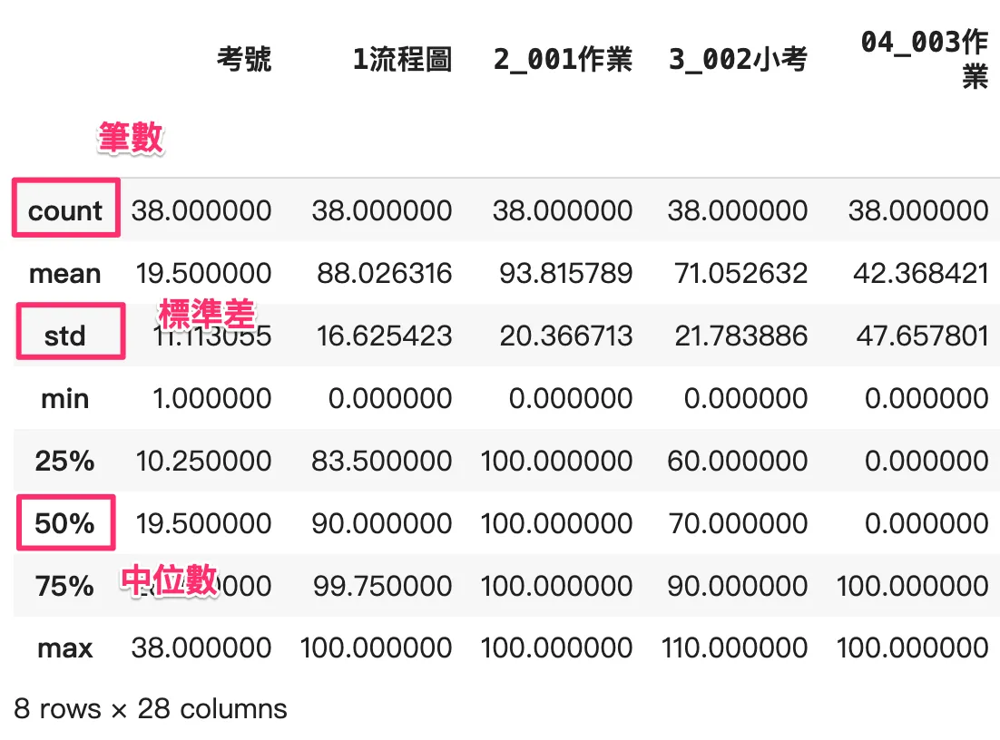
基本的統計我們還是需要理解一下
標準差(std)
一組數值資料中各資料與平均值的分散程度。
(54,56,64,64,82)與(63,64,64,64,65)兩組數據，雖然有相同的平均數、中位數及眾數；但兩組標準差卻不同。
中位數(50%)
一組數值依大小排列順序後最中間值。
中位數與平均數的差別
在薪資數據中，觀察平均數和中位數的差異，可以幫助了解薪資分佈的偏態。如果平均數遠高於中位數，通常表示薪資分佈具有右偏態，即少數高薪個體拉高了整體薪資水準。這種情況下，標準差往往也會較大，表示員工之間的收入差距較大。當企業想要了解薪資是否公平或透明時，除了看平均數外，觀察中位數和標準差能提供更深入的見解。
例如此篇報導：
https://money.udn.com/money/story/10869/8224597
補缺失值 fillna()
可以看到儲存中有NaN代表沒有資料，需要將其補值或刪除，才不會影響計算結果
可以使用fillna()來填補值
想確認欄位名字的話可以用df.columns
1 | |
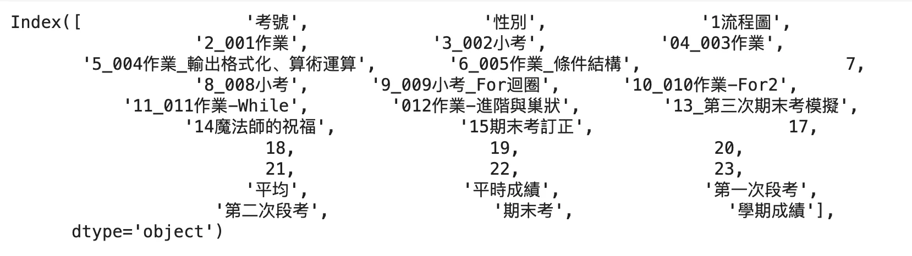
1 | |
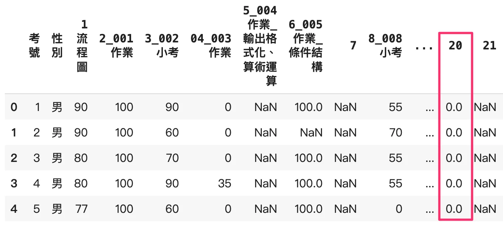
也可能補上平均值、中位數、眾數等等，可以更準確的預測這人平時該有的分數。
比如2號在「6_005作業_條件結構」是缺值的可以選擇
本次作業的平均
缺失的人的全部成績的平均
以欄位平均（本次作業難度為標準）填補缺失值
篩選缺失欄位 isna() 或 isnull()
先看看有誰缺失
1 | |
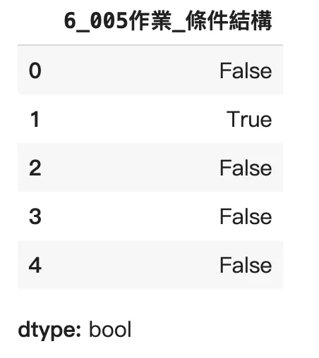
1 | |

計算欄位平均值與填補缺失值
計算平均值
1 | |
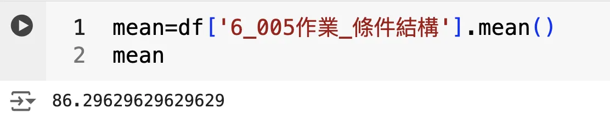
1 | |
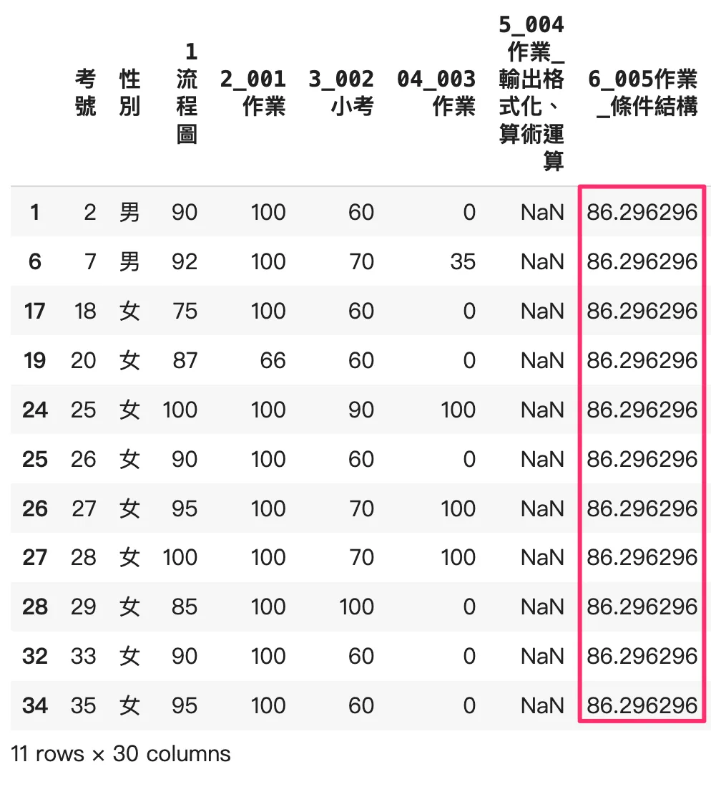
以列平均(個人能力為標準)補缺失值
每個人能力不均，實際上常常考0分，缺失值給他高分不見得合理
試以「012作業-進階與巢狀」用列平均補缺失值
缺失的人的全部成績的平均，一樣先把這些人找出來
找缺失值
1 | |
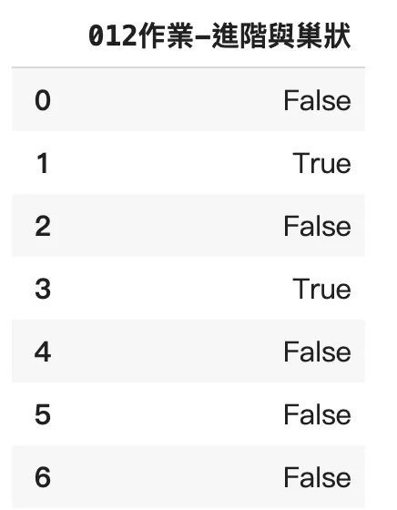
1 | |
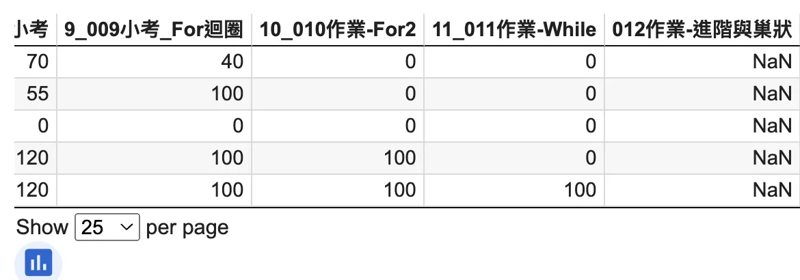
以iloc 取列區域
iloc相對於loc是用index(標號)來做區域選取。
扣除前面幾欄的文字（姓名、性別）和後面幾欄（成績平均）後選取區域
1 | |
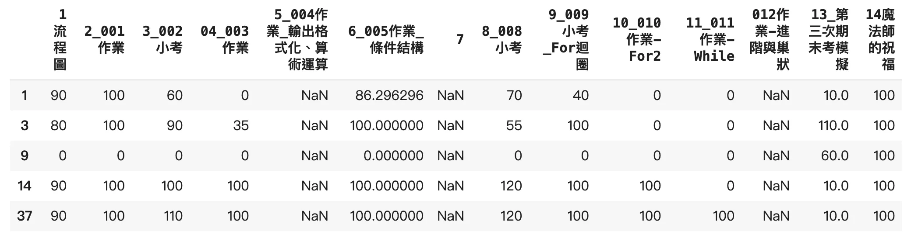
接者，取每一列的平均值
1 | |
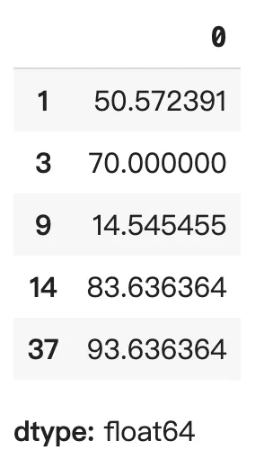
1 | |
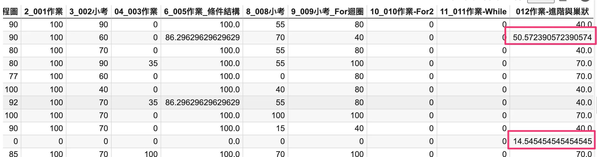
資料刪除
drop()
可以將不需要的欄位刪除，比如「5_004作業_輸出格式化、算術運算」
1 | |
刪除這個欄位(axis=1)
dropna()
將有缺失值的欄位刪除，非常暴力！
建議僅在真的缺失太多時使用
1 | |
資料轉換
在後面做機器學習的時候，有些文字需要轉換成獨一無二的二進制編碼，稱之為「獨熱編碼」（One-Hot Encoding），才好進行運算。
下面以男、女為例，進行資料的轉換。pandas 提供了一個非常方便的函數 get_dummies，可以將分類變數轉換為獨熱編碼。
1 | |
此處男女，直接轉換成布林值
以上為常用前處理介紹，後續都會持續使用到！